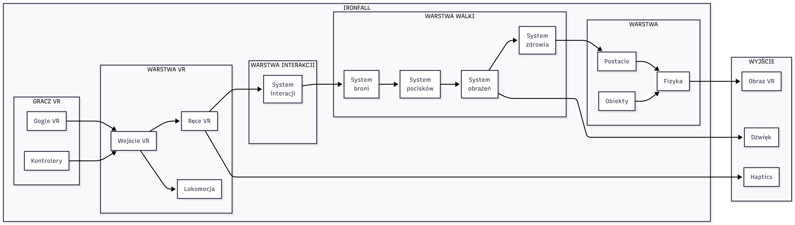
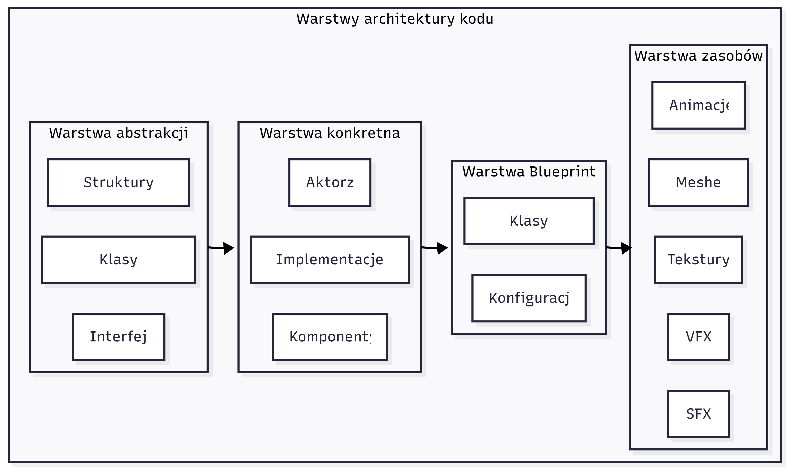
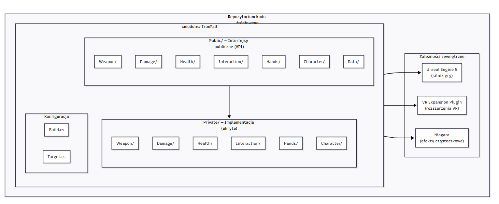
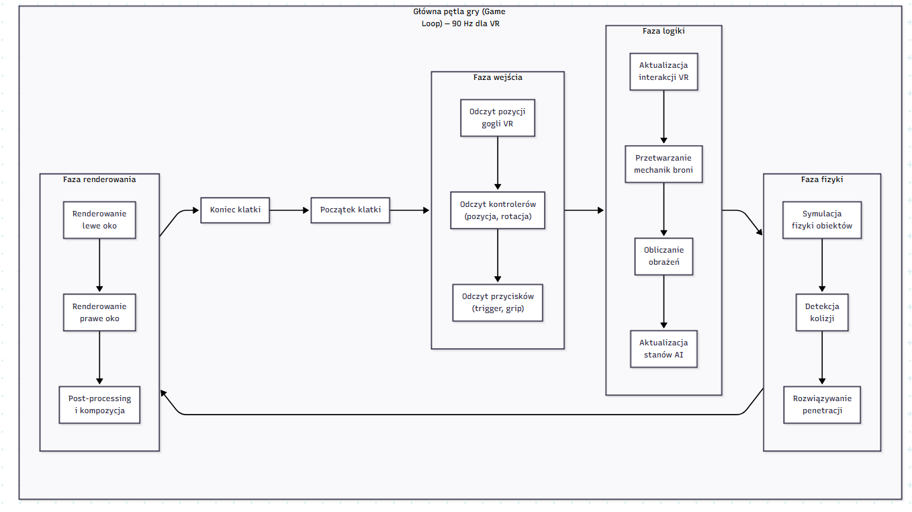

IronFall
Projektowanie i implementacja gry typu VR FPS
w
silniku Unreal Engine 5
Showcase — Gameplay
Agenda
Cel i Zakres Pracy
Określenie co budujemy i dlaczego właśnie to
Cel pracy
Zaprojektowanie i implementacja grywalnego prototypu gry typu First-Person Shooter dedykowanego środowisku wirtualnej rzeczywistości.
Wyzwania VR
Wymagania środowiska
- Minimum 72–90 FPS stabilnie
- Latencja Motion-to-Photon < 11.1 ms
- Ograniczenia standalone (Quest)
- Komfort użytkownika vs. immersja
- Renderowanie stereoskopowe (2× obciążenie GPU)
Dlaczego Unreal Engine 5?
- Rozbudowany zestaw narzędzi
- Grafika wysokiej jakości out-of-the-box
- Hybrydowy model: C++ + Blueprints
- Wcześniejsze doświadczenie zespołu
- Brak konieczności dodatkowych bibliotek
Diagram kontekstu

Stos technologiczny
Unreal Engine 5
Silnik gry, rendering, fizyka
VRExpansionPlugin
Chwytanie, ruch, replikacja VR
C++ / Blueprint
Hybrydowy model programowania
Physics Control
Active Ragdoll, interakcje fizyczne
Niagara
Efekty cząsteczkowe, VFX
OpenXR
Abstrakcja sprzętowa VR
MoSCoW
Priorytetyzacja wymagań funkcjonalnych — co musi działać, a co może poczekać
Must Have KRYTYCZNE
Should Have WAŻNE
Could Have & Would Have
Could Have 🟡
Would Have ⚪
Wymagania immersywne

Synergia 4 sfer percepcji: wizualnej, słuchowej, dotykowej i interakcyjnej → Presence
Architektura Systemu
Jak zorganizowaliśmy system i dlaczego wybraliśmy te wzorce
Architektura ogólna

Jednokierunkowy przepływ danych: Wejście VR → Interakcja → Walka/Świat → Wyjście (Stereo + Haptyka)
Perspektywa logiczna

Wzorce projektowe
Strategy
Tryby ognia broni
UIronFireMode→ Automatic
→ Burst
→ Single
→ Shotgun
Chain of Responsibility
Obsługa trafień
UIronHitBehavior→ ApplyDamage
→ PhysicsImpulse
→ Ragdoll
Component-Based
Modularność systemu
UIronInputEventComponentUIronSlotEventComponentUHandSocketComponentUGripMotionControllerUIronSliderComponentUIronBoltWeapon
Event-Driven
Komunikacja modułów
OnWeaponFiredOnDeathOnStateChanged
Hybrydowy C++ / Blueprint

Struktura repozytorium

Public/ (nagłówki, API) ↔ Private/ (implementacja) — separacja = szybsza kompilacja przyrostowa
Zapewnienie Jakości
& Wydajność
Jak testowaliśmy i jak utrzymaliśmy budżet klatki 11.1 ms
Definition of Done
Testy manualne
Stopnie (Step Up)
Płynne wchodzenie na krawężnik 15 cm
Kolizja ze ścianą
Ślizg bez przenikania kamery
Chwyt jednoręczny
Poprawna reakcja na wagę obiektu
Przełożenie broni
Płynne przekładanie między rękami
Odrzut broni
Muzzle Rise + rozrzut przy Full Auto
Przeładowanie
Wyrzut + zatrzaśnięcie magazynka
Fizyczne interakcje
Pchnięcie drzwi (Active Ragdoll)
Budżet klatki — Game Loop

Techniki optymalizacji
Rendering
- Instanced Rendering
- LOD (Level of Detail)
- Occlusion Culling
- Baking oświetlenia
Fizyka
- Uproszczone kolidery
- Wyłączanie Tick nieaktywnych
- Asset streaming
- Separacja danych od logiki
Architektura
- C++ dla krytycznych ścieżek
- Gameplay Tags zamiast stringów
- POD Structs (cache-friendly)
- Event-driven (brak pollingu)
Showcase
Jak to działa w praktyce — kluczowe systemy i diagramy
System postaci (VR Character)

VRCharacter: kapsuła + fizyczne ręce + HMD tracking + Physics Control
Fizyczne dłonie VR

👻 Ghost Hand
- Niewidoczny transform (target)
- Pozycja kontrolera 1:1
- Reprezentuje intencję ruchu
✊ Physical Hand
- Widoczny skeletal mesh
- Pełna symulacja fizyczna
- Spring & Damping → poczucie masy
System broni

Physics Control uśrednia siły ręki głównej i pomocniczej → stabilne celowanie, symulacja ciężaru
Interakcje ze środowiskiem
Podejście systemowe
- Brak gotowych animacji
- Active Ragdoll = fizyczny obiekt
- Interakcje wynikają z fizyki
- Pchnij drzwi → drzwi się otwierają
Collision Filtering
- Kanały: WorldDynamic + WorldStatic
- Ignorowanie drobnych detali
- Zapobieganie zaczepom palców
- Spójne zachowanie fizyczne
Nie potrzeba specjalnego kodu per-obiekt. Transfer siły: masa dłoni × prędkość → obiekt
Enkapsulacja kontekstu
USTRUCT(BlueprintType)
struct FIronGripContext
{
GENERATED_BODY()
UGripMotionControllerComponent* CallingController;
UGripMotionControllerComponent* OtherController;
FGameplayTagContainer ContextTags;
UObject* TargetObject;
FTransform ObjectTransform;
FVector ImpactPoint;
FName SlotName;
};
Parameter Object Pattern — jedno wywołanie zamiast 7 parametrów. Ewolucja API bez refaktoru sygnatur.
Podsumowanie
Co osiągnęliśmy i co dalej
Stopień realizacji celu
Zrealizowano w pełni funkcjonalny prototyp VR Shooter na Oculus Quest,
obsługujący mechanikę strzelania, fizykę oddziaływań oraz system interakcji VR,
działający płynnie w wymaganym reżimie czasowym 90 Hz.
Model architektoniczny 4+1 pozwolił na skuteczną dekompozycję systemu
na niezależne moduły: Combat, Interaction, World.
Wnioski
Architektura hybrydowa
C++ (rdzeń) + Blueprint (treść) = krótki czas iteracji bez utraty wydajności
Optymalizacja VR
Rendering + fizyka = wąskie gardło. Instancing i uproszczone kolidery rozwiązały problem.
Modularność
Separacja warstw → niezależne testowanie podsystemów, mniej błędów regresyjnych
Kierunki rozwoju
Multiplayer
Architektura gotowa na replikację sieciową — rozszerzenie warstwy Foundation o synchronizację stanu gry
AI — Behavior Trees
Zaawansowane drzewa behawioralne i system osłon dla przeciwników
Komercjalizacja
Solidna baza (foundation) do dalszego rozwoju komercyjnego lub badawczego
Dziękujemy za uwagę
IronFall — VR FPS • Unreal Engine 5
Pytania? 🎤